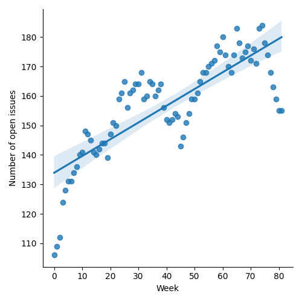
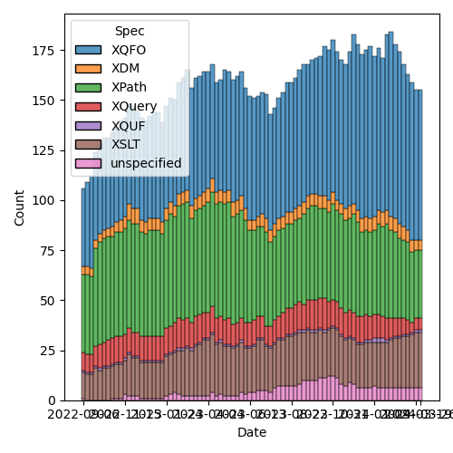
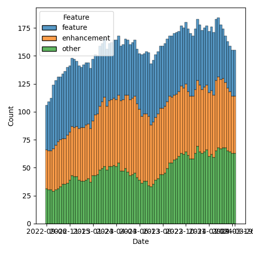

QT4 CG Meeting 071 Minutes 2024-03-26
Table of Contents
- Minutes
- Summary of new and continuing actions
[0/10] - 1. Administrivia
- 2. Technical Agenda
- 2.1. PR #1071: 1070 Bare Brace map constructor syntax
- 2.2. PR #1059: 1019 XQFO: Unknown option parameters
- 2.3. PR #1100: 99 fn:equal() function to compare sequences and arrays
- 2.4. PR #1077: Correct the status of new language features
- 2.5. PR #1074 Confirm status of provisional functions
- 2.6. PR #1088 and #1098: improvements to parse-uri/build-uri
- 3. Any other business
- 4. Adjourned
Meeting index / QT4CG.org / Dashboard / GH Issues / GH Pull Requests
Minutes
Approved at meeting 072 on 9 April 2024.
Summary of new and continuing actions [0/10]
[ ]QT4CG-063-06: MK to consider refactoring the declare item type syntax to something like declare record[ ]QT4CG-064-08: NW to open an issue to try to resolve $search to $target consistently.[-]QT4CG-069-02: NW to coordinate with MK to use the introspection features on the test suite.- In progress…
[ ]QT4CG-070-01: NW to review how records are formatted.[ ]QT4CG-071-01: MK to put namespace bindings for XQuery back on the issue list[ ]QT4CG-071-02: MK to raise a PR that changes map construction examples as appropriate[ ]QT4CG-071-03: MK to review the definition of map equality infn:equal[ ]QT4CG-071-04: MK to update the prose to highlight differences betweenfn:equalandfn:deep-equal[ ]QT4CG-071-05: MK to consider the name of the function argument.[ ]QT4CG-071-06: NW to clarify the cases that are distinguished by the leading empty string in path segments
1. Administrivia
1.1. Roll call [12/15]
[X]Reece Dunn (RD)[X]Sasha Firsov (SF)[X]Mukul Gandhi (MG)[X]Christian Grün (CG)[X]Joel Kalvesmaki (JK)[X]Michael Kay (MK)[X]Juri Leino (JLO)[X]John Lumley (JLY)[X]Dimitre Novatchev (DN)[X]Wendell Piez (WP)[ ]Ed Porter (EP)[ ]Liam Quin (LQ)[ ]Adam Retter (AR)[X]C. M. Sperberg-McQueen (MSM)[X]Norm Tovey-Walsh (NW). Scribe. Chair.
1.2. Accept the agenda
Proposal: Accept the agenda.
1.2.1. Status so far…

Figure 1: “Burn down” chart on open issues

Figure 2: Open issues by specification

Figure 3: Open issues by type
1.3. Approve minutes of the previous meeting
Proposal: Accept the minutes of the previous meeting.
Accepted.
1.4. Next meeting
The next meeting is scheduled for Tuesday, 9 April 2024.
The CG will not meet on 2 April 2024.
WP, JK gives regret for 9 April.
1.5. Review of open action items [2/6]
[X]QT4CG-063-04: NW to try to add test review to the editorial meeting.[ ]QT4CG-063-06: MK to consider refactoring the declare item type syntax to something like declare record[ ]QT4CG-064-08: NW to open an issue to try to resolve $search to $target consistently.[-]QT4CG-069-02: NW to coordinate with MK to use the introspection features on the test suite.- In progress…
[ ]QT4CG-070-01: NW to review how records are formatted.[X]QT4CG-070-02: MK to raise the line separators issue in parse-csv.
1.6. Review of open pull requests and issues
1.6.1. Merge without discussion
The following PRs are editorial, small, or otherwise appeared to be uncontroversial when the agenda was prepared. The chairs propose that these can be merged without discussion. If you think discussion is necessary, please say so.
- PR #1106: 859 lookup syntax problems
- PR #1097: 566-partial Fix colon issue in URI parsing
- PR #1092: 1039 Add notes referring to fn:collation-key
- PR #1078: 1060-partial Formatting XPath/XQuery
- PR #1076: 1075 Drop 'with' expressions
MK wants to talk about #1076
- MK: Do we still want to solve the problem that
withwas attempting to solve? - WP: I think it would be nice, but EQNames are useful. Would be nice to get developers more familiar with it.
- DN: I don’t remember hearing about this issue. My experience with namespaces in XQuery has not been very satisfactory.
ACTION: QT4CG-071-01: MK to put namespace bindings for XQuery back on the issue list
JLO wants to discuss #1078
- JLO: There’s only one remark, the empty map should be formatted differently.
There’s a lot of whitespace in an empty map now.
- … It would be nice to have a discussion about formatting XPath and XQuery in general.
- CG: I looked at the predominate way things were done. I added whitespace to make it more readable.
- MK: Did you use tools to do it?
- CG: I did it by hand.
Proposal: merge all of these PRs without further discussion.
Approved.
1.6.2. Substantive PRs
The following substantive PRs were open when this agenda was prepared.
- PR #1112: 1110-partial New error codes
- PR #1108: 566-partial Describe a less aggressive %-encoding for fn:build-uri
- PR #1100: 99 fn:equal() function to compare sequences and arrays
- PR #1098: 566-partial Editorial improvements per recent discussion
- PR #1093: 1091 Add fn:collation function
- PR #1087: 1086 Editorial changes to array:values
- PR #1077: Correct the status of new language features
- PR #1074: Confirm status of provisional functions
- PR #1071: 1070 Bare Brace map constructor syntax
- PR #1068: 73 fn:graphemes
- PR #1062: 150bis - revised proposal for fn:ranks
- PR #1059: 1019 XQFO: Unknown option parameters
- PR #1027: 150 fn:ranks
1.6.3. Proposed for V4.0
The following issues are labled “proposed for V4.0”.
- Issue #938: Canonical serialization
- Issue #934: String comparison in deep-equal
- Issue #910: Introduce a Kollection object with functions that operate on all types of items that can be containers of unlimited number of "members"
- Issue #908: Function identity: documentation still too vague
- Issue #882: fn:chain or fn:compose
- Issue #850: fn:parse-html: Finalization
- Issue #716: Generators in XPath
- Issue #689: fn:stack-trace: keep, drop, replace with $err:stack-trace ?
- Issue #583: array:replace(), etc
- Issue #557: fn:unparsed-binary: accessing and manipulating binary types
- Issue #150: fn:ranks: Produce all ranks in applying a function on the items of a sequence
- Issue #31: Extend FLWOR expressions to maps
2. Technical Agenda
Agenda reordered as suggested in email.
2.1. PR #1071: 1070 Bare Brace map constructor syntax
See PR #1071: 1070 Bare Brace map constructor syntax
MK summarizes the proposed change. p
- MK: The
mapkeyword left the plain braces available for other features, but those features no longer exist. - JLO: The main question I have is, will this be problematic in places where we do have curly braces in XML.
- MK: The only place where you would be likely to have problems are where you have a map or a string where you could have element content.
- RD: Curly braces in an XML literal switches the contexts. So if you have
{ }and your map in that, that’s fine. But because of XQuery uses}}in the XML context as an escaped}, you’d have to avoid that. - DN: I’m really not sure there isn’t ambiguity here. What about the body of a
function? How do we distinguish it from a map. And didn’t we do something with
if/then/elseto use braces. - MK: There are no expressions that begin with curly braces, so it doesn’t appear to be a problem.
- RD: Those are all defined in terms of contained expressions.
- MK: There’s ambiguity in the sense that the grammar is ambiguous and I don’t
think we have any technical ambiguities in that sense. There’s also ambiguity
that confuses the reader, you might want to continue to use the
mapkeyword for that. - JLY: I had the same comment as DN; use the
mapkeyword. - WP: (inaudible)
Something about attribute value templates.
- MK: That’s like the other cases; but those are always strings so it’s even less likely.
Proposal: Merge this PR.
Accepted.
ACTION: QT4CG-071-02: MK to raise a PR that changes map construction examples as appropriate
2.2. PR #1059: 1019 XQFO: Unknown option parameters
See PR #1059
- NW: We’ve talked about this a couple of times. CG’s revision makes it an error to use unknown options only if they are in no namespace.
- CG: That’s right.
Proposal: accept this PR
Accepted.
2.3. PR #1100: 99 fn:equal() function to compare sequences and arrays
See PR #1100: 99 fn:equal() function to compare sequences and arrays
MK introduces the PR.
- MK: This is a function that can compare anything and is parameterized at the
item level about how it does the comparison.
- … Fills out the family of starts-with/ends-with etc. functions
- CG: I think we need to check if the second map contains a value because the value can be an empty sequence.
Some discussion of the finer details here. A missing key vs. a key with the
value of an empty sequence. {a:()} vs {b:()}, for example.
ACTION: QT4CG-071-03: MK to review the definition of map equality in fn:equal
- MK: It’s different from
fn:deep-equalprimarily in that the comparison is parameterized. - JLY: Given that the
fn:deep-equalandfn:equalare both descending comparisons, both sections should highlight the differences.
ACTION: QT4CG-071-04: MK to update the prose to highlight differences between fn:equal and fn:deep-equal
- DN: We need to know more about the differences between this and
fn:deep-equal. It can be confusing. In all these signatures, the comparison function is confusing. Rather than equality comparison, I’d like a more general comparison, not just equality.- … For example, consider a sort key where you might produce an array and you should be able to compare arrays as sort keys.
- MK: Those are all good points. I have the same dilemma, we have too many comparison functions and not enough! I’d like to find a different name. I do think we need a straight equality comparison to complement the subsequence-equals/starts-with/etc. functions. You can’t just use a general comparison because not all atomic values are ordered.
- DN: The name of the argument could be
equality-comparer. - MK: It’s a bit long for a keyword; there’s always a tension in naming.
ACTION: QT4CG-071-05: MK to consider the name of the function argument.
- CG: Another challenge is the existence of the
comparitorfunction. A user might expect to use it here. I think it would be reasonable to add it for this case as well. Then there’s a question of nodes vs. atomic values. Many comparisons atomize and that might create different results. - MK: Then it quickly becomes non-transitive.
Some discussion of the examples.
- JLO: Maybe it’s really useful to point out what a leaf is.
Some discussion of whether or not that term is in the spec.
- DN: It seems strange that there are no collations here.
- MK: I felt you could supply a comparison callback that uses a collation.
(From the chat, there is some discussion of whether or not a comparison function
should be made available to fn:deep-equal)
MK will make another pass.
2.4. PR #1077: Correct the status of new language features
See PR #1077
MK introduces the PR; it just changes the change log.
- MK: It resolves the fact that we have now discussed all the features.
- CG: I think so.
Proposal: merge this PR.
Accepted.
2.5. PR #1074 Confirm status of provisional functions
See PR #1074
- MK: this is the same thing for Functions and Operators.
- … It removes the
fn:jsonfunction as that’s the subject of a PR in flight.
- … It removes the
- CG: I have some concerns regarding
fn:stack-trace; that’s actually still an open issues.- … The same is true of
map:replaceandarray:replace.
- … The same is true of
Proposal: merge this PR.
Accepted.
2.6. PR #1088 and #1098: improvements to parse-uri/build-uri
See PR #1098: 566-partial Editorial improvements per recent discussion
- CG: I think there’s a comment in the PR that wasn’t addressed.
- NW: Oh…
Some discussion of why the leading empty string is necessary in path segments.
ACTION: QT4CG-071-06: NW to clarify the cases that are distinguished by the leading empty string in path segments
And we’ve run out of time.
3. Any other business
None heard.